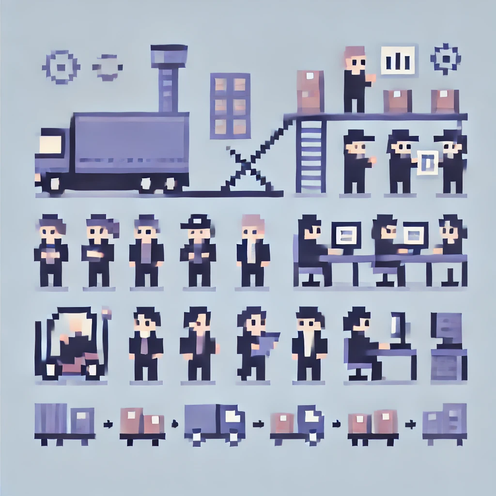

Analyse et Optimisation des Commandes Complètes
Contexte
Refonte et optimisation du processus de picking des bons complets, accompagnée de modifications dans le logiciel WMS. Ce projet a permis une réorganisation des tâches de picking en divisant le magasin en deux zones distinctes, améliorant ainsi l'efficacité opérationnelle.
Documents
Technologies
WMS
SCI
Excel
Compétences acquises
- Gérer le patrimoine informatique
- Répondre aux incidents et aux demandes d’assistance
- Mettre à disposition des utilisateurs un service informatique